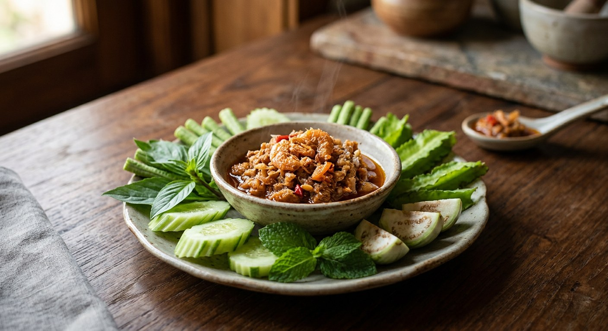

Kapi grilled until it smells of the sea, pounded with shallots, garlic and bird's eye chillies, then crisp dried shrimp folded through — the Phuket nam phrik that eats rice by the bowl.

The dish is named for its shrimp, not its technique: กุ้งเสียบ (goong siab) are small shrimp threaded onto thin bamboo skewers — เสียบ means to skewer — and dried in the sun until they smoke of the sea. Sold in bundles on southern street stalls, they are a snack in their own right, but their proper destiny is the mortar.
In Phuket this dip belongs to the island's famous น้ำชุบ (nam chub) family, as the 2010 Pantip thread on the subject records: น้ำชุบหยำ, chopped with a knife, and น้ำชุบยอก, pounded in a mortar — the goong siab version is pounded, so it sits in the yok school. The backbone is always the same: kapi, the fermented shrimp paste that gives every southern nam phrik its depth, plus shallots, garlic, chillies, palm sugar and lime.
The recipe travels. A Cookpad cook from Chai Nat, deep in the central plains, found herself craving the dip with no goong siab in sight — so she made it with ordinary large dried shrimp (กุ้งแห้ง) and reported it works. That same swap is the one you'll most likely need in Britain.
| Thai | English | Amount |
|---|---|---|
| กุ้งเสียบ | Dried smoked shrimp (goong siab) | 1 cup |
| หอมแดง | Shallots | 5 |
| กระเทียม | Garlic cloves | 15 |
| พริกขี้หนู | Bird's eye chillies | 10 |
| กะปิ | Shrimp paste (kapi) | 1 tbsp |
| น้ำปลา | Fish sauce | 1/2 tbsp |
| น้ำตาลปี๊บ | Palm sugar | 2 tbsp |
| น้ำมะนาว | Lime juice | 3 tbsp |
| ผักสดตามชอบ | Fresh vegetables, to serve | as you like |
The Pantip pot (topic 36502509): 30 g roasted goong siab, kapi grilled in a banana leaf, 3 tsp palm sugar, the juice of 1 large lime, aromatics dry-roasted first — and the one Thai source that asks for a sweet-forward balance, served with vegetables blanched in salted water. The Krua pot: goong siab or sun-dried shrimp roasted in a covered pan for 10–15 minutes, pounded with large red bird's eye chillies and grilled kapi, seasoned with palm sugar and lime or calamansi. The Aroifin pot: 300 g goong siab with only 2–3 chillies, 1½ tbsp kapi, 1 tbsp white sugar plus ½ tbsp palm sugar and 1 tbsp lime — the mildest version. The Cookpad pot: ordinary large dried shrimp, dry-roasted, folded in lightly and served with a boiled egg.
The kapi. Wongnai toasts it wrapped in foil on a dry pan; Pantip grills it in a banana leaf; Krua simply says "grilled until fragrant"; Aroifin adds it raw, straight into the mortar. All agree it is essential — only the fire is disputed.
What happens to the shrimp. Wongnai and Aroifin fold the roasted goong siab through whole, keeping every shrimp intact. Krua pounds until the shrimp just breaks apart. Cookpad pounds lightly so the flesh splits. The argument is over crunch versus cohesion, and no source pulverises it.
Dried or fresh chillies. Aroifin's introduction names dried chillies (พริกแห้ง), but its own ingredient list says 2–3 fresh bird's eye. Wongnai uses 10 fresh bird's eye, Krua large red ones. If you want the hotter, deeper southern version, roast dried chillies before pounding.
The sweet lead. Pantip alone instructs ชิมรสให้หวานนำ — taste for sweetness to lead. Wongnai's 2 tbsp of palm sugar against 3 tbsp of lime leans sour; Aroifin mixes white and palm sugar. Follow Pantip only if you like a sweet dip.
The vegetables. Pantip blanches long beans, cucumber, carrot, cabbage and baby corn in salted water, then shocks them in cold water for crunch. Every other source serves the vegetables raw. Cookpad adds a boiled egg no one else mentions.
This recipe is translated from the following Thai-language sources. Where they disagree, we've said so.
1. Wongnai — "น้ำพริกกุ้งเสียบ สูตรโฮมเมด หรอยแรงแซงทุกจานในสำรับ" (the recipe used here) — wongnai.com
2. Aroifin — "น้ำพริกกุ้งเสียบ เผ็ดหูจี้ หรอยแรง สไตล์คนใต้แท้ ๆ" (the mild version; the don't-over-pound warning) — aroifin.com
3. Krua.co — "น้ำพริกกุ้งเสียบ by KRUA.CO" (the covered-pan roast; calamansi option) — krua.co
4. Pantip topic 36502509 — "น้ำพริกกุ้งเสียบ รสเด็ด" (the sweet-forward pot; the blanched vegetables) — pantip.com
5. Pantip topicstock D9337477 — "น้ำชุบกุ้งเสียบ หรือ น้ำพริกกุ้งเสียบ ของชาวใต้" (Phuket's nam chub family) — topicstock.pantip.com
6. Cookpad — "น้ำพริกกุ้งเสียบ by Warakitchen" (the dried-shrimp swap; boiled egg) — cookpad.com